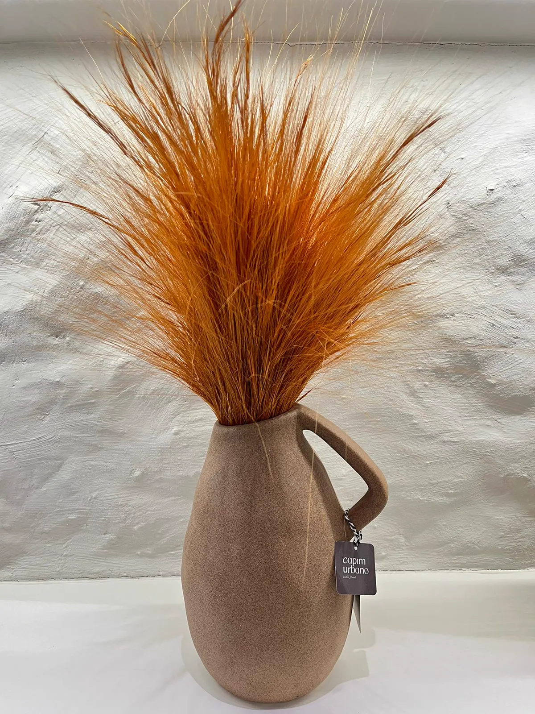

para transformar ambientes
Assinatura floral
Curadoria recorrente de arranjos para casas, consultórios, recepções e marcas. Presença natural e identidade, sem a manutenção diária das flores frescas.
- Paleta, vaso e formato pensados para o espaço
- Renovação conforme estação ou evento